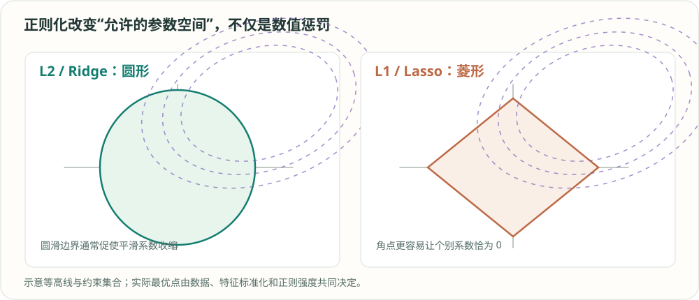
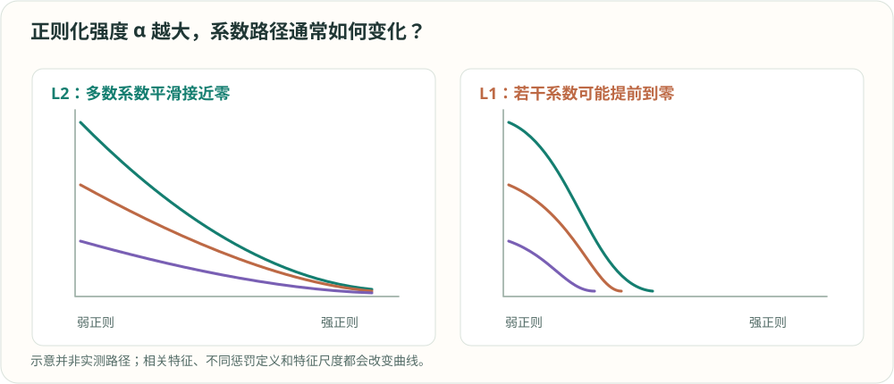

线性回归与正则化：从残差到稀疏解
为什么最小二乘法可以同时拟合许多参数？正则化到底改变了什么？从投影几何与线性代数出发，把 OLS、Ridge、Lasso 和 Elastic Net 的目标、边界与代码对应起来。
01 · 线性模型是特征组合，不要求原始关系呈直线
对一条有 d 个特征的样本 x∈R^d，线性回归把预测写为 ŷ=β₀+xᵀβ。这里“线性”是指相对于待估计系数 β 呈线性，而不是限制原始特征只能是一维数值。把 x, x² 等非线性特征作为新的输入后，模型仍可以对扩展后的特征做线性回归。
对 n 条样本，设计矩阵 X∈R^(n×d)、系数 β∈R^d，预测向量为 Xβ+β₀·1。若模型要学习截距，通常需要把截距独立于正则化的权重项处理。将特征与标签的关联视作因果关系则需要额外的研究设计，单靠回归系数无法实现。
02 · 最小二乘法到底在最小化什么
最小二乘法（OLS）对每个预测计算真实值与预测值的竖直残差，选择使残差平方和最小的参数。它不会强迫直线穿过全部点，尤其在观测包含噪声时；平方也会使大的误差受到更强惩罚。
在完整列秩和适当截距处理的条件下，最优残差与设计矩阵的列空间正交，由正规方程 XᵀXβ=Xᵀy 表示。不要把显式计算 (XᵀX)⁻¹ 当作通用实现：共线性或病态矩阵会带来数值不稳定，QR 分解或 SVD 的最小二乘求解器通常更稳妥。
03 · 什么时候系数难以解释或不稳定
如果面积以平方米计、价格以万元计，且两列特征尺度相差很大，优化算法或带正则化的系数估计可能对尺度敏感。两个强相关特征可能提供几乎相同的信息，导致单独系数显著摆动；这并不一定表示整体预测也同样不稳定。
最小二乘是优化定义，统计解释需要额外假设。误差零条件期望、样本选择偏差、异方差、时间相关和外生性都会影响推断。对预测任务应优先关注数据划分与泛化；对因果问题不能直接套用预测评价来宣称“系数代表效果”。
04 · Ridge：用 L2 惩罚稳定参数
Ridge 在平方残差目标后加上权重的平方惩罚。按 scikit-learn Ridge 的目标形式，可写为 ||y−Xβ||²+α||β||²，其中示意里忽略了独立拟合、不作惩罚的截距。α≥0，较大的惩罚通常收缩系数幅度并改善某些病态设计的稳定性，代价是引入偏差；不能保证任何数据上的预测误差必然下降。
这与带 1/(2n) 因子的 Lasso 目标在 α 的数值尺度上不同。**不能在未经换算和验证的情况下直接对比 Ridge(alpha=1) 与 Lasso(alpha=1) 的惩罚强度。**
05 · Lasso 和 Elastic Net：稀疏性从哪里来
Lasso 使用系数绝对值之和 ||β||₁ 作为惩罚，约束集合在二维时呈菱形，最优等高线更容易在坐标轴角点接触边界，从而出现零系数。Ridge 的 L2 约束在二维是圆形，通常产生连续收缩。图的几何只是直觉：Lasso 不保证所有问题都稀疏，也不能把选出的特征当成稳定的因果证据。

Elastic Net 把 L1 和 L2 混合，常用来处理存在相关特征的场景。scikit-learn 的 ElasticNet 中 l1_ratio=1 对应 Lasso；一般情况下混合参数取值与惩罚强度都需要通过开发集交叉验证选择，不能照抄某一数据集的最优设置。
06 · 系数路径为什么不能只看一个 α
当正则化强度从弱逐步变强，系数通常被压向零。Ridge 的系数常平滑缩小，Lasso 在一些参数值处可令部分系数精确为零。然而，若多个特征高度相关，单个系数路径并不保证始终单调；在不同训练切分中选中的特征组合也可能变化。

应在每折训练内部拟合标准化器，使用交叉验证选择 α，再用保留测试集检查最终性能。正则化并不是替代数据清洗、训练验证切分或变量含义审查的捷径。
07 · 多项式特征仍要防止过拟合
用 PolynomialFeatures(degree=2) 将 x 变换为 x,x² 后，线性模型就能拟合曲线。但二维或更高维时，多项式组合数量可能快速增长；高阶特征会放大尺度差异和条件数问题。应把特征展开与标准化放在 Pipeline 中，用训练折拟合处理器，并通过 CV 控制复杂度。
08 · 可运行：比较三个正则化目标
下面自行构造固定随机种子的数据，故意让第二列与第一列高度相关，比较常数基线、Ridge、Lasso、ElasticNet。每个候选使用相同的 KFold 策略，并且标准化在折内完成。程序验证输出有限、测试切分数量正确，不提前声称哪一种一定最好。
import numpy as np
from sklearn.model_selection import train_test_split, KFold, cross_val_score
from sklearn.preprocessing import StandardScaler
from sklearn.pipeline import make_pipeline
from sklearn.linear_model import Ridge, Lasso, ElasticNet
from sklearn.dummy import DummyRegressor
from sklearn.metrics import mean_squared_error
rng = np.random.default_rng(19)
X = rng.normal(size=(240, 6))
X[:, 1] = X[:, 0] * 0.95 + 0.05 * rng.normal(size=240)
y = 2.0 * X[:, 0] - 1.2 * X[:, 2] + 0.3 * rng.normal(size=240)
Xtr, Xtest, ytr, ytest = train_test_split(
X, y, test_size=0.20, random_state=19)
models = {
"baseline": DummyRegressor(strategy="mean"),
"ridge": make_pipeline(StandardScaler(), Ridge(alpha=1.0)),
"lasso": make_pipeline(StandardScaler(), Lasso(alpha=0.08, max_iter=5000)),
"elastic": make_pipeline(StandardScaler(),
ElasticNet(alpha=0.08, l1_ratio=0.5, max_iter=5000)),
}
folds = KFold(n_splits=5, shuffle=True, random_state=19)
scores = {}
for name, model in models.items():
mse = -cross_val_score(model, Xtr, ytr, cv=folds,
scoring="neg_mean_squared_error")
scores[name] = float(np.sqrt(mse).mean())
print("CV RMSE by candidate:", scores)
winner = min(scores, key=scores.get)
selected = models[winner].fit(Xtr, ytr)
test_mse = mean_squared_error(ytest, selected.predict(Xtest))
print("selected:", winner, "held-out RMSE:", np.sqrt(test_mse))
assert np.isfinite(test_mse) and test_mse >= 0
assert Xtr.shape[0] + Xtest.shape[0] == 240依赖 Python 3.10+、NumPy、scikit-learn。此处只用 CV 分数选择一个模型，然后对获选模型评估一次保留测试集；不利用其他模型的测试分数反复挑选，避免测试集参与模型选择。
09 · 局限与来源
样本外关系非线性、噪声分布偏斜、特征强相关或观测分布移动时，线性回归可能产生可观系统误差。带正则化并不保证无偏系数、稳定特征选择或准确不确定性区间；针对推断需求还要审查误差过程和模型设定。